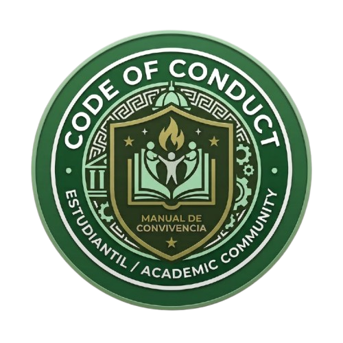
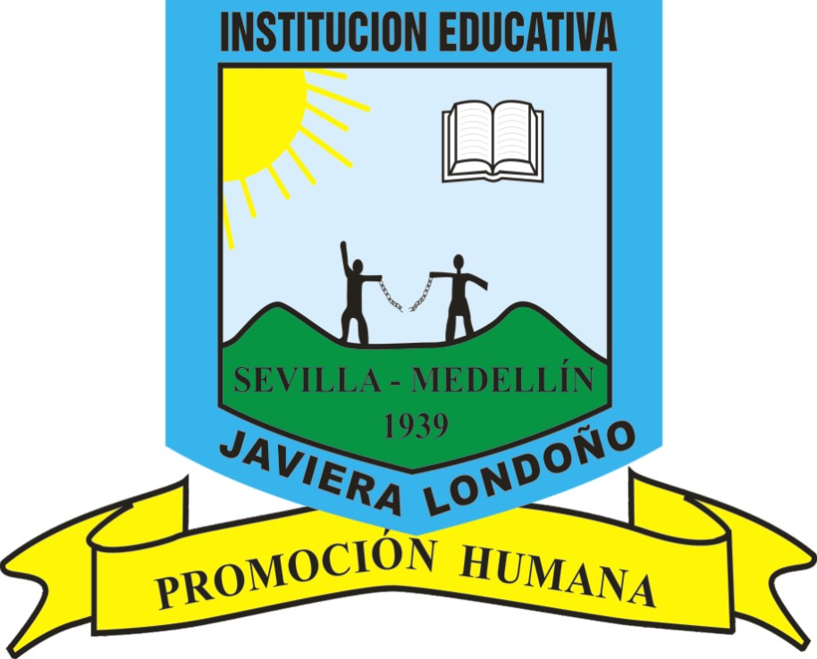
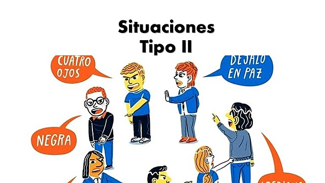
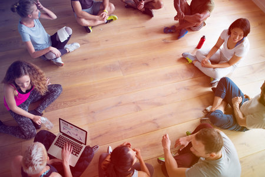

¿Qué es?
El manual es el acuerdo de toda la comunidad educativa: define derechos, deberes, comportamientos, medidas pedagógicas y cómo resolver conflictos. Debe ser conocido y construido por todos.


Manual de Convivencia: las reglas que construimos entre todos para convivir bien, resolver los conflictos con respeto y aprender de los errores.
Conocer másUna guía digital para entender el Manual de Convivencia sin leer un documento de 80 páginas.
El manual es el acuerdo de toda la comunidad educativa: define derechos, deberes, comportamientos, medidas pedagógicas y cómo resolver conflictos. Debe ser conocido y construido por todos.

Las situaciones se clasifican en Tipo I, II y III. Cada una tiene un protocolo: quién actúa, a quién se informa y cómo se repara el daño. El Comité Escolar de Convivencia hace seguimiento.

Que el enfoque actual es pedagógico, no solo de castigo: se busca aprender del error, reparar y comprometerse a no repetirlo. Además, todos somos corresponsables.
Base: orientaciones del Ministerio de Educación Nacional (Actualización de Manuales de Convivencia Escolar, 2022), Ley 1620 de 2013 y Decreto 1965 de 2013. Para sanciones y procedimientos exactos, el documento oficial es el manual de nuestra IE.
El manual ya no habla solo de "faltas": identifica situaciones que afectan la convivencia y los derechos. Toca cada tipo.
Casos de uso reales: toca cada momento del colegio.
Convivir es un acuerdo de doble vía: todos tenemos derechos y todos tenemos responsabilidades. Verifica el detalle en el manual de la IE.
La bitácora es el cuaderno digital del colegio: ahí se anota qué pasó, de qué tipo fue y quién actuó. Así se ve qué situaciones se repiten y se pueden prevenir. Son ejemplos ilustrativos, sin nombres de personas.
| Fecha | Situación | Tipo | Quién actúa | Foto |
|---|
Toca una tarjeta para abrir la definición y un dato curioso.
Responde 10 preguntas sobre el manual y gana tu medalla.
Si te pasa algo o ves que le pasa a alguien, puedes acudir a estas personas. Si estás en peligro, no esperes: pide ayuda de inmediato.
Para reportar peleas, conflictos o cualquier situación que afecte la convivencia.
Para hablar de acoso, ciberacoso o lo que te preocupa, y recibir apoyo.
Para defender tus derechos y llevar quejas o propuestas de los estudiantes.
123 Emergencias y Policía · 141 Línea de protección del ICBF para niños, niñas y adolescentes · 155 Orientación a mujeres víctimas de violencia.
Confirma que los números sigan vigentes antes de la Feria.